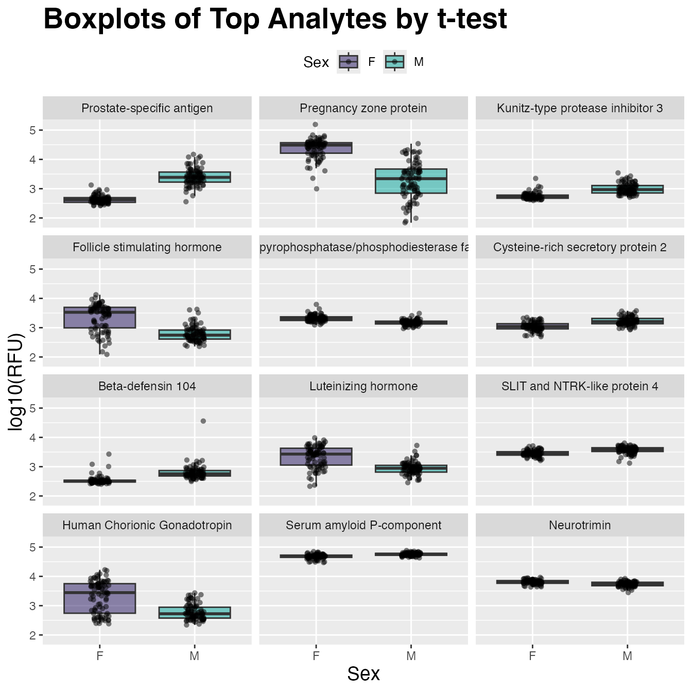

Two-Group Comparison
Stu Field, SomaLogic Operating Co., Inc.
Source:vignettes/articles/stat-two-group-comparison.Rmd
stat-two-group-comparison.RmdDifferential Expression via t-test
Although targeted statistical analyses are beyond the scope of the
SomaDataIO package, below is an example analysis that
typical users/customers would perform on ‘SomaScan’ data.
It is not intended to be a definitive guide in statistical analysis
and existing packages do exist in the R ecosystem that
perform parts or extensions of these techniques. Many variations of the
workflow below exist, however the framework highlights how one could
perform standard preliminary analyses on ‘SomaScan’ data.
Data Preparation
# the `example_data` package data
dim(example_data)
#> [1] 192 5318
table(example_data$SampleType)
#>
#> Buffer Calibrator QC Sample
#> 6 10 6 170
# center/scale
cs <- function(.x) { # .x = numeric vector
out <- .x - mean(.x) # center
out / sd(out) # scale
}
# prepare data set for analysis
cleanData <- example_data |>
filter(SampleType == "Sample") |> # rm control samples
drop_na(Sex) |> # rm NAs if present
log10() |> # log10-transform (Math Generic)
modify_at(getAnalytes(example_data), cs) # center/scale analytes
table(cleanData$Sex)
#>
#> F M
#> 85 85Compare Two Groups (M/F)
Get annotations via getAnalyteInfo():
t_tests <- getAnalyteInfo(cleanData) |>
select(AptName, SeqId, Target = TargetFullName, EntrezGeneSymbol, UniProt)
# Feature data info:
# Subset via dplyr::filter(t_tests, ...) here to
# restrict analysis to only certain analytes
t_tests
#> # A tibble: 5,284 × 5
#> AptName SeqId Target EntrezGeneSymbol UniProt
#> <chr> <chr> <chr> <chr> <chr>
#> 1 seq.10000.28 10000-28 Beta-crystallin B2 "CRYBB2" P43320
#> 2 seq.10001.7 10001-7 RAF proto-oncogene se… "RAF1" P04049
#> 3 seq.10003.15 10003-15 Zinc finger protein 41 "ZNF41" P51814
#> 4 seq.10006.25 10006-25 ETS domain-containing… "ELK1" P19419
#> 5 seq.10008.43 10008-43 Guanylyl cyclase-acti… "GUCA1A" P43080
#> 6 seq.10011.65 10011-65 Inositol polyphosphat… "OCRL" Q01968
#> 7 seq.10012.5 10012-5 SAM pointed domain-co… "SPDEF" O95238
#> 8 seq.10013.34 10013-34 Fc_MOUSE "" Q99LC4
#> 9 seq.10014.31 10014-31 Zinc finger protein S… "SNAI2" O43623
#> 10 seq.10015.119 10015-119 Voltage-gated potassi… "KCNAB2" Q13303
#> # ℹ 5,274 more rowsCalculate t-tests
Use a “list columns” approach via nested tibble object using
dplyr, purrr, and
stats::t.test()
t_tests <- t_tests |>
mutate(
formula = map(AptName, ~ as.formula(paste(.x, "~ Sex"))), # create formula
t_test = map(formula, ~ stats::t.test(.x, data = cleanData)), # fit t-tests
t_stat = map_dbl(t_test, "statistic"), # pull out t-statistic
p.value = map_dbl(t_test, "p.value"), # pull out p-values
fdr = p.adjust(p.value, method = "BH") # FDR for multiple testing
) |>
arrange(p.value) |> # re-order by `p-value`
mutate(rank = row_number()) # add numeric ranks
# View analysis tibble
t_tests
#> # A tibble: 5,284 × 11
#> AptName SeqId Target EntrezGeneSymbol UniProt formula t_test t_stat
#> <chr> <chr> <chr> <chr> <chr> <list> <list> <dbl>
#> 1 seq.846… 8468… Prost… KLK3 P07288 <formula> <htest> -22.1
#> 2 seq.658… 6580… Pregn… PZP P20742 <formula> <htest> 14.2
#> 3 seq.792… 7926… Kunit… SPINT3 P49223 <formula> <htest> -11.1
#> 4 seq.303… 3032… Folli… CGA FSHB P01215… <formula> <htest> 9.67
#> 5 seq.168… 1689… Ecton… ENPP2 Q13822 <formula> <htest> 9.37
#> 6 seq.576… 5763… Beta-… DEFB104A Q8WTQ1 <formula> <htest> -8.71
#> 7 seq.928… 9282… Cyste… CRISP2 P16562 <formula> <htest> -8.47
#> 8 seq.295… 2953… Lutei… CGA LHB P01215… <formula> <htest> 8.55
#> 9 seq.491… 4914… Human… CGA CGB P01215… <formula> <htest> 8.14
#> 10 seq.247… 2474… Serum… APCS P02743 <formula> <htest> -7.40
#> # ℹ 5,274 more rows
#> # ℹ 3 more variables: p.value <dbl>, fdr <dbl>, rank <int>Visualize with ggplot2()
Create a plotting tibble in the “long” format for
ggplot2:
target_map <- head(t_tests, 12L) |> # mapping table
select(AptName, Target) # SeqId -> Target
plot_tbl <- example_data |> # plot non-center/scale data
filter(SampleType == "Sample") |> # rm control samples
drop_na(Sex) |> # rm NAs if present
log10() |> # log10-transform for plotting
select(Sex, target_map$AptName) |> # top 12 analytes
pivot_longer(cols = -Sex, names_to = "AptName", values_to = "RFU") |>
left_join(target_map, by = "AptName") |>
# order factor levels by 't_tests' rank to order plots below
mutate(Target = factor(Target, levels = target_map$Target))
plot_tbl
#> # A tibble: 2,040 × 4
#> Sex AptName RFU Target
#> <chr> <chr> <dbl> <fct>
#> 1 F seq.8468.19 2.54 Prostate-specific antigen
#> 2 F seq.6580.29 4.06 Pregnancy zone protein
#> 3 F seq.7926.13 2.66 Kunitz-type protease inhibitor 3
#> 4 F seq.3032.11 3.26 Follicle stimulating hormone
#> 5 F seq.16892.23 3.44 Ectonucleotide pyrophosphatase/phosphodiester…
#> 6 F seq.5763.67 2.52 Beta-defensin 104
#> 7 F seq.9282.12 2.94 Cysteine-rich secretory protein 2
#> 8 F seq.2953.31 2.99 Luteinizing hormone
#> 9 F seq.4914.10 3.93 Human Chorionic Gonadotropin
#> 10 F seq.2474.54 4.71 Serum amyloid P-component
#> # ℹ 2,030 more rows
plot_tbl |>
ggplot(aes(x = Sex, y = RFU, fill = Sex)) +
geom_boxplot(alpha = 0.5, outlier.shape = NA) +
scale_fill_manual(values = c("#24135F", "#00A499")) +
geom_jitter(shape = 16, width = 0.1, alpha = 0.5) +
facet_wrap(~ Target, ncol = 3) +
ggtitle("Boxplots of Top Analytes by t-test") +
labs(y = "log10(RFU)") +
theme(plot.title = element_text(size = 21, face = "bold"),
axis.title.x = element_text(size = 14),
axis.title.y = element_text(size = 14),
legend.position = "top"
)